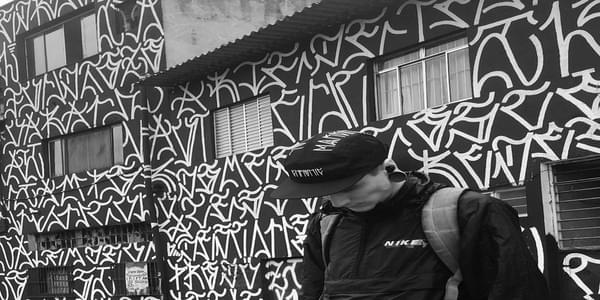

Grafite no Brasil
No Brasil, mais precisamente na cidade de São Paulo, que o Grafite ganha destaque após diversos confrontos entre os grafiteiros e as autoridades públicas. É nessa capital que o Grafite se torna popular diante de todas as classes sociais, começando a ser comercializado por artistas que começaram a vender esse tipo de arte, sendo convidados por grandes empresas para exporem sua forma de manifestar opiniões pelos jatos de tinta em uma superfície. O Grafite teve seu início no Brasil a partir da década de 70, seguindo as influências dos movimentos norte-americanos, que ganhavam forças nesse mesmo período. Não podemos esquecer, que nesse período, o Brasil lutava contra a grande censura da Ditadura Militar, que fazia dos Grafiteiros muito corajosos e inovadores. Das ruas de São Paulo, a arte foi se espalhando pelo Brasil e ficando cada vez mais conhecida e popular nacionalmente, encorajada também pelo movimento Negro, e discussões raciais, que iniciaram a partir dessa década após a ascensão do Hip Hop. Apesar de recente, o Grafite no Brasil já é reconhecido como arte e comercializado como tal, gerando celebridades importantes para esse meio, que são referências para muitos que estão começando.
